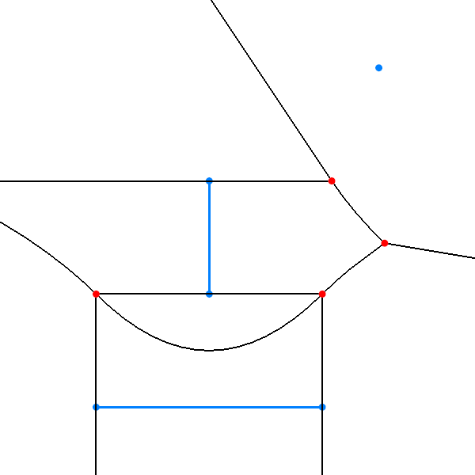
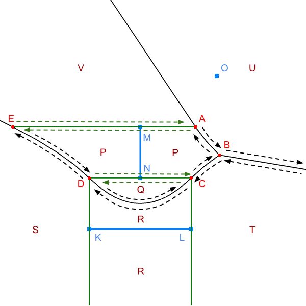

目录
- Boost.Polygon 主页
- 设计概述
- 各向同性
- 坐标概念
- 区间概念
- 点概念
- Segment 概念
- 矩形概念
- Polygon 90 概念
- 带孔 Polygon 90 概念
- Polygon 45 概念
- 带孔 Polygon 45 概念
- 多边形概念
- 带孔多边形概念
- Polygon 90 集合概念
- Polygon 45 集合概念
- 多边形集合概念
- 90 度连通性提取
- 45 度连通性提取
- 连通性提取
- 90 度属性合并
- 45 度属性合并
- 属性合并
- Voronoi 主页
- Voronoi 基准测试
- Voronoi 构建器
- Voronoi 图
其他资源
Polygon 赞助者

Voronoi 图
Voronoi 图是一个计算几何概念, 表示把给定空间划分为若干区域, 其边界由到指定对象族的距离决定. 这一概念的应用领域从考古学到动物学 不一而足. Boost.Polygon Voronoi 扩展提供了二维空间中 Voronoi 图数据结构的实现. 其内部表示由三个数组组成, 分别包含: Voronoi 单元 (表示由 Voronoi 边所围的输入站点周围区域)、Voronoi 顶点 (三条或更多 Voronoi 边相交的点)、Voronoi 边 (包含与两个最近输入站点等距的点的一维曲线). 每个原语 (单元、顶点、边) 都包含指向其他关联原语的指针, 因此总是可以高效地遍历 Voronoi 图. 下图中红色的为 Voronoi 顶点, 黑色的为 Voronoi 边, 与 Voronoi 单元对应的输入站点为蓝色. 每条输入线段被视为由三个站点组成: 线段本身及其端点. 因此, 每条输入线段会额外构造两条 Voronoi 边. 这样做是为了简化 Voronoi 图 (尤其是 Voronoi 边) 的表示.
重要
所有 Voronoi 原语数据结构 (边、顶点、单元) 都包含可变的 color 成员. color 类型等价于 std::size_t 类型, 只是最高五个位保留作内部使用. 这意味着 color 成员支持的最大值比 std::size_t 支持的值小 32 倍.声明
头文件: boost/polygon/voronoi_diagram.hpptemplate <typename T, typename TRAITS = voronoi_diagram_traits<T> >
class voronoi_diagram;
T - Voronoi 顶点的坐标类型.
TRAITS - Voronoi 图特征.
成员函数
| voronoi_diagram() | 默认构造函数. |
| void clear() | 从 Voronoi 图中移除所有原语. |
| const cell_container_type& cells() const | 返回单元容器的 const 引用. |
| const vertex_container_type& vertices() const | 返回顶点容器的 const 引用. |
| const edge_container_type& edges() const | 返回边容器的 const 引用. |
| size_t num_cells() const | 返回 Voronoi 图中 Voronoi 单元的数量. |
| size_t num_edges() const | 返回 Voronoi 图中 Voronoi 边 (半边) 的数量. |
| size_t num_vertices() const | 返回 Voronoi 图中 Voronoi 顶点的数量. |
成员类型
| coordinate_type | 坐标类型. |
| cell_type | Voronoi 单元. |
| vertex_type | Voronoi 顶点. |
| edge_type | Voronoi 边. |
| cell_container_type | Voronoi 单元的容器. |
| const_cell_iterator | 单元容器的 const 迭代器. |
| vertex_container_type | Voronoi 顶点的容器. |
| const_vertex_iterator | 顶点容器的 const 迭代器. |
| edge_container_type | Voronoi 边的容器. |
| const_edge_iterator | 边容器的 const 迭代器. |
Voronoi 几何类型
Voronoi 图数据结构并不内嵌输入几何的坐标, 而是通过 Voronoi 单元原语的源索引和源类别方法与它们关联. 源索引以递增方式 (从零开始) 分配给插入Voronoi 构建器 的每个输入站点. 鉴于每条输入线段被拆分为三个具有相同索引的独立站点, 我们使用源类别来区分它们. 更多示例参见Voronoi 基础教程.GeometryCategory
定义输入对象的几何类别.Header: boost/polygon/voronoi_geometry_type.hpp
enum GeometryCategory {
GEOMETRY_CATEGORY_POINT = 0x0,
GEOMETRY_CATEGORY_SEGMENT = 0x1
};
SourceCategory
定义输入站点的语义类别.Header: boost/polygon/voronoi_geometry_type.hpp
enum SourceCategory {
// 点子类型.
SOURCE_CATEGORY_SINGLE_POINT = 0x0,
SOURCE_CATEGORY_SEGMENT_START_POINT = 0x1,
SOURCE_CATEGORY_SEGMENT_END_POINT = 0x2,
// 线段子类型.
SOURCE_CATEGORY_INITIAL_SEGMENT = 0x8,
SOURCE_CATEGORY_REVERSE_SEGMENT = 0x9,
SOURCE_CATEGORY_GEOMETRY_SHIFT = 0x3,
SOURCE_CATEGORY_BITMASK = 0x1F
};
成员函数
| bool belongs( SourceCategory source_category, GeometryCategory geometry_category) |
若给定的源类别属于给定的几何类别则返回 true. 否则返回 false. |
Voronoi 边
Voronoi 边是一条包含与两个最近输入几何等距的点的一维曲线. Voronoi 边数据结构实现为增强的经典半边 数据结构. 在下图中, Voronoi 边画为有向的线性 (如 AE) 或弯曲 (如 DE) 虚线, 颜色为绿色 (如 AE) 或黑色 (如 DE). 绿色的边被视为次级边, 因为它们由输入线段及其端点生成 (如由线段 MN 及其端点 M 生成的边 EA). 其余的边都被视为主边 (如由线段 KL 和点 N 生成的弯曲边 CD). 此外, 每条边可以是有限的 (如 ED) 或无限的 (如从点 B 出发朝东方向延伸的边).
每个 Voronoi 边 (以有向边 BA 为例) 都提供对以下原语的高效访问:
- 该边所属的单元 (Voronoi 单元 P, 源线段为 MN)
- 该边的起点 (Voronoi 顶点 B, 与以下输入站点等距: O, L, MN)
- 该边的终点 (Voronoi 顶点 A, 与以下输入站点等距: O, M, MN)
- 孪生边 (Voronoi 边 AB)
- 该边所属 Voronoi 单元内的逆时针下一条边 (绿色 Voronoi 边 AE)
- 该边所属 Voronoi 单元内的逆时针上一条边 (Voronoi 边 CB)
- 围绕该边起点逆时针旋转的下一条边 (Voronoi 边 BC)
- 围绕该边起点逆时针旋转的上一条边 (从 Voronoi 顶点 B 出发、朝东方向延伸的无限 Voronoi 边)
声明
Header: boost/polygon/voronoi_diagram.hpptemplate <typename T>
class voronoi_edge;
T - coordinate type.
成员函数
| voronoi_edge(bool is_linear, bool is_primary) | Voronoi 边构造函数. |
| voronoi_cell_type* cell() | 返回该边所属 Voronoi 单元的指针. |
| const voronoi_cell_type* cell() const | 返回指向该边所属 Voronoi 单元的 const 指针. |
| void cell(voronoi_cell_type* c) | 把 Voronoi 单元指针设置为当前边所属的单元. |
| voronoi_vertex_type* vertex0() | 返回指向该边起点的指针. 若该边在该方向上无限延伸则返回 NULL. |
| const voronoi_vertex_type* vertex0() const | 返回指向该边起点顶点的 const 指针. 若该边在该方向上无限延伸则返回 NULL. |
| void vertex0(voronoi_vertex_type* v) | 设置该边的起点指针. |
| voronoi_vertex_type* vertex1() | 返回指向该边终点的指针. 若该边在该方向上无限延伸则返回 NULL. |
| const voronoi_vertex_type* vertex1() const | 返回指向该边终点的 const 指针. 若该边在该方向上无限延伸则返回 NULL. |
| voronoi_edge_type* twin() | 返回指向孪生边的指针. |
| const voronoi_edge_type* twin() const | 返回指向孪生边的 const 指针. |
| void twin(voronoi_edge_type* e) | 设置该边的孪生边指针. |
| voronoi_edge_type* next() | 返回对应 Voronoi 单元内逆时针下一条边的指针. 各边不一定共享同一顶点 (例如无限边). |
| const voronoi_edge_type* next() const | 返回对应 Voronoi 单元内逆时针下一条边的 const 指针. 各边不一定共享同一顶点 (例如无限边). |
| void next(voronoi_edge_type* e) | 设置该边的逆时针下一条边指针. |
| voronoi_edge_type* prev() | 返回对应 Voronoi 单元内逆时针上一条边的指针. 各边不一定共享同一顶点 (例如无限边). |
| const voronoi_edge_type* prev() const | 返回对应 Voronoi 单元内逆时针上一条边的 const 指针. 各边不一定共享同一顶点 (例如无限边). |
| void prev(voronoi_edge_type* e) | 设置该边的逆时针上一条边指针. |
| color_type color() const | 返回 color 值. |
| void color(color_type color) const | 设置该边的颜色. 允许把用户提供的数据与该原语关联. |
| voronoi_edge_type* rot_next() | 返回围绕该边起点逆时针旋转后的下一条边的指针. 对无限边同样适用. |
| const voronoi_edge_type* rot_next() const | 返回围绕该边起点逆时针旋转后的下一条边的 const 指针. 对无限边同样适用. |
| voronoi_edge_type* rot_prev() | 返回围绕该边起点逆时针旋转后的上一条边的指针. 对无限边同样适用. |
| const voronoi_edge_type* rot_prev() const | 返回围绕该边起点逆时针旋转后的上一条边的 const 指针. 对无限边同样适用. |
| bool is_finite() const | 若该边的两个端点都是有限的则返回 true, 否则返回 false. |
| bool is_infinite() const | 若该边的某一端点是无限的则返回 true, 否则返回 false. |
| bool is_linear() const | 若该边是线性的 (线段、射线、直线) 则返回 true, 否则返回 false. |
| bool is_curved() const | 若该边是弯曲的 (抛物弧) 则返回 true, 否则返回 false. |
| bool is_primary() const | 若该边穿过线段站点的端点则返回 false, 否则返回 true. |
| bool is_secondary() const | 若该边穿过线段站点的端点则返回 true, 否则返回 false. |
成员类型
| coordinate_type | 坐标类型. |
| voronoi_cell_type | Voronoi 单元类型. |
| voronoi_vertex_type | Voronoi 顶点类型. |
| voronoi_edge_type | Voronoi 边类型. |
| color_type | 颜色类型 (参见 Important 一节). |
Voronoi 单元
Voronoi 单元表示 Voronoi 图中由 Voronoi 边围成的一个区域. 下图中有 7 个这样的区域: P、Q、R、S、T、U、V. 每个 Voronoi 单元的源可以是一个点 (如单元 Q、S、T、U、V 分别对应输入源 N、K、L、O、M) 或一条线段 (如单元 P 和 R 分别对应输入源 MN 和 KL). Voronoi 单元原语不包含源几何的坐标, 而是存储源几何的索引和类别. 源索引对应于分配给每个输入几何的唯一 id (例如 Voronoi 构建器使用的递增计数器). 这样的索引可以唯一标识任何输入点 (如 O), 但无法区分线段 (如 MN) 与它的两个端点 (如 M、N). 为了消除可能出现的歧义, 需要使用源类别, 它指定输入对象的语义拓扑 (如线段起点、线段终点或线段本身). Voronoi 单元数据结构还提供对位于单元边界上的随机一条 Voronoi 边的访问 (如单元 P 的边 AE).声明
Header: boost/polygon/voronoi_diagram.hpptemplate <typename T>
class voronoi_cell;
T - coordinate type.
成员函数
| voronoi_cell(source_index_type
source_index, source_category_type source_category) |
Voronoi 单元构造函数. |
| source_index_type source_index() const | 返回输入站点在其他站点中的索引. 线段及其端点将具有相同的索引. |
| source_category_type source_category() const | 返回输入站点在其他站点中的类别. 允许区分线段站点及其端点. |
| voronoi_edge_type* incident_edge() | 返回指向其中一条边界边的指针. |
| const voronoi_edge_type* incident_edge() const | 返回指向其中一条边界边的 const 指针. |
| void incident_edge(voronoi_edge_type* e) | 设置该单元的关联边界边指针. |
| color_type color() const | 返回与该单元关联的 color 值. |
| void color(color_type color) const | 设置该单元的颜色. 允许把用户提供的数据与该原语关联. |
| bool contains_point() const | 若该单元包含点站点则返回 true, 否则返回 false. |
| bool contains_segment() const | 若该单元包含线段站点则返回 true, 否则返回 false. |
| bool is_degenerate() const | 若该单元没有关联边则返回 true. 当多个输入线段共享同一端点时可能出现这种情况. |
成员类型
| coordinate_type | 坐标类型. |
| source_index_type | 源索引类型. |
| source_category_type | 源类别类型. |
| voronoi_edge_type | Voronoi 边类型. |
| color_type | 颜色类型 (参见 Important 一节). |
杂项
下面的代码片段高效地遍历 Voronoi 单元周围的 Voronoi 边:const voronoi_edge<double>* edge = cell->incident_edge();
do {
edge = edge->next();
// 对边做些处理.
} while (edge != cell->incident_edge());
Voronoi 顶点
Voronoi 顶点表示一个与三条或更多输入几何等距的点. 因此, 它对应于三条或更多 Voronoi 边的交点. 下图中有 5 个这样的顶点: A、B、C、D、E. Voronoi 顶点数据结构内嵌底层点的坐标, 并提供对从该顶点出发的随机一条 Voronoi 边的访问 (如顶点 B 的边 BC).声明
Header: boost/polygon/voronoi_diagram.hpptemplate <typename T>
class voronoi_vertex;
T - coordinate type.
成员函数
| voronoi_vertex(const
coordinate_type& x, const coordinate_type& y) |
Voronoi 顶点构造函数. |
| const coordinate_type& x() const | 返回表示该顶点的点的 x 坐标. |
| const coordinate_type& y() const | 返回表示该顶点的点的 y 坐标. |
| voronoi_edge_type* incident_edge() | 返回关联边指针. |
| const voronoi_edge_type* incident_edge() const | 返回指向关联边的 const 指针. |
| void incident_edge(voronoi_edge_type* e) | 设置关联边指针. |
| color_type color() const | 返回与该顶点关联的 color 值. |
| void color(color_type color) const | 设置该顶点的颜色. 允许把用户提供的数据与该原语关联. |
成员类型
| coordinate_type | 坐标类型. |
| voronoi_edge_type | Voronoi 边类型. |
| color_type | 颜色类型 (参见 Important 一节). |
杂项
下面的代码片段高效地遍历 Voronoi 顶点周围的 Voronoi 边:const voronoi_edge<double>* edge = vertex->incident_edge();
do {
edge = edge->next();
// 对边做些处理.
} while (edge != vertex->incident_edge());
Voronoi 图特征
Voronoi 图特征用于配置 Voronoi 图数据结构所使用的 Voronoi 原语类型与谓词.该实现包含针对 double 输出坐标类型的默认特征特化.
声明
Header: boost/polygon/voronoi_diagram.hpptemplate <typename T>
struct voronoi_diagram_traits;
T - coordinate type.
成员类型
| coordinate_type | Voronoi 图原语的坐标类型. |
| cell_type | Voronoi 单元类型. |
| vertex_type | Voronoi 顶点类型. |
| edge_type | Voronoi 边类型. |
| vertex_equality_predicate_type | 若认为两个点相等则返回 true 的谓词. 否则返回 false. 它用于合并相邻的 Voronoi 顶点. |
| 版权: | 版权所有 © Andrii Sydorchuk 2010-2013. |
|---|---|
| License: | 按 Boost 软件许可 1.0 版 (Boost Software License, Version 1.0) 分发. (随附文件 LICENSE_1_0.txt 或复制于 http://www.boost.org/LICENSE_1_0.txt) |